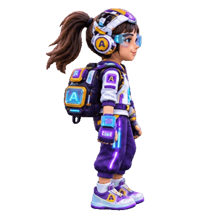

Rute 1Titik 1

🪐 Siap menghadapi tantangan?
Mata pelajaran dan soal dipilih secara acak oleh server. Pilih satu jawaban terbaik untuk melanjutkan perjalanan.
Jelajahi 10 pos dan selesaikan 81 tantangan dari lima mata pelajaran sesuai kelasmu.

Mata pelajaran dan soal dipilih secara acak oleh server. Pilih satu jawaban terbaik untuk melanjutkan perjalanan.